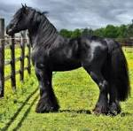

| Inicio | Árabes | Percherones | Andaluces | Frisones |
Conoce las razas más majestuosas del mundo equino
Caballo ÁrabeElegante y veloz, conocido por su resistencia y belleza distintiva. |
Percherón
De gran tamaño y fuerza, usado tradicionalmente para trabajos pesados. |
AndaluzCaballo español elegante y ágil, ideal para doma clásica. |

FrisónNegro, majestuoso y con una presencia imponente, muy apreciado por su porte. |
©2025 Todos los derechos reservados
David Becerril Quintana